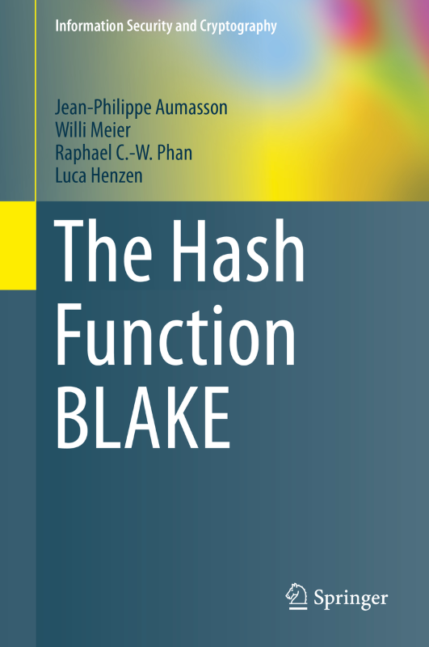

The Hash Function BLAKE
A book by Jean-Philippe Aumasson, Willi Meier, Raphael C.-W. Phan, Luca
Henzen
Springer
OrderingAmazon | Barnes & Noble | Springer | Waterstones eBook: Springer Link Reviews"Very rarely do cryptographers focus on the bigger picture of their work: namely, how their systems and ciphers relate to the real world. In this book, J.P. Aumasson describes an innovative, state-of-the art hash function, while still making his work relatable to both the engineering and mathematical sciences. The approach taken to writing The Hash Function BLAKE is the approach necessary to reverse the isolation of cryptography as a science, by connecting it to programmers, engineers, and designers of both hardware and software. By coupling this practical style with a thorough mathematical description, this book is at the forefront of helping make cryptography a field that is more relevant across the entire discipline of computer science and engineering." —Nadim KobeissiBack coverThis is a comprehensive description of the cryptographic hash function BLAKE, one of the five final contenders in the NIST SHA3 competition, and of BLAKE2, an improved version popular among developers. It describes how BLAKE was designed and why BLAKE2 was developed, and it offers guidelines on implementing and using BLAKE, with a focus on software implementation. In the first two chapters, the authors offer a short introduction to cryptographic hashing, the SHA3 competition, and BLAKE. They review applications of cryptographic hashing, they describe some basic notions such as security definitions and state-of-the-art collision search methods, and they present SHA1, SHA2, and the SHA3 finalists. In the chapters that follow, the authors give a complete description of the four instances BLAKE-256, BLAKE-512, BLAKE-224, and BLAKE-384; they describe applications of BLAKE, including simple hashing with or without a salt, and HMAC and PBKDF2 constructions; they review implementation techniques, from portable C and Python to AVR assembly and vectorized code using SIMD CPU instructions; they describe BLAKE’s properties with respect to hardware design for implementation in ASICs or FPGAs; they explain BLAKE's design rationale in detail, from NIST’s requirements to the choice of internal parameters; they summarize the known security properties of BLAKE and describe the best attacks on reduced or modified variants; and they present BLAKE2, the successor of BLAKE, starting with motivations and also covering its performance and security aspects. The book concludes with detailed test vectors, a reference portable C implementation of BLAKE, and a list of third-party software implementations of BLAKE and BLAKE2. The book is oriented towards practice—engineering and craftsmanship— rather than theory. It is suitable for developers, engineers, and security professionals engaged with BLAKE and cryptographic hashing in general, and for applied cryptography researchers and students who need a consolidated reference and a detailed description of the design process, or guidelines on how to design a cryptographic algorithm. Sample chapterChapter 2: PreliminariesTable of contents
Contactjeanphilippe.aumasson@gmail.com |
 |